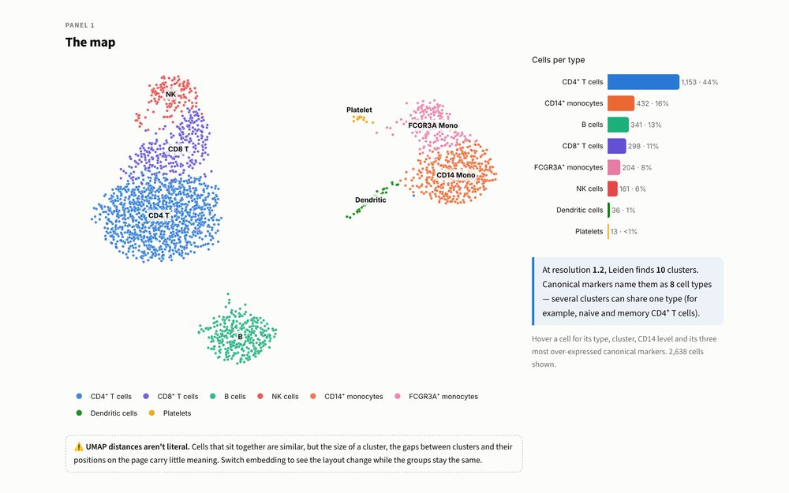

DS-02● Live

Single-Cell Atlas
How do 2,700 blood immune cells group into cell types? Explore an interactive map of single cells, the marker genes that define each type, and how analysis choices change the picture.
- Data
- 10x Genomics PBMC 3k
- Method
- Scanpy · Leiden · UMAP